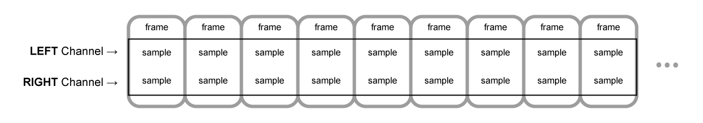

Въведение в аудио филтрите за уеб
Дефиниция
Аудио wtf mate филтри в уеб наричаме библиотеки, които се използват за създаване и манипулация на звук в уеб (откъдето идва и името филтри).
Web Audio API
Най-разпространената имплементация е библиотеката Web Audio API. Тя включва изпълнение на аудио операции в контекст. Аудио операциите се извършват посредством audio node-ове, свързани помежду си оформяйки audio routing graph.
- Има няколко типа върхове в този граф:
- sources (източници) - това са върхове, генериращи аудио. Пример за такъв е Oscillator, като такива могат да са дори <audio> елементи в една html страница.
- filters - това са тези върхове, които изменят аудиото, което преминава през тях и го предават на други върхове след тях.
- destinations - това е крайната точка, където бива запращано аудиото. Това обичайно са хардуерните устройства произвеждащи звук.
Последователността от ефекти при Web Audio API може да се изобрази по следния начин:

Звукът минава през върховете на графа под формата на поток, като един поток може да се състои от няколко канала. В зависимост от броя на каналите може да се поддържа различен тип аудио структура, като например моно, стерео, quad и 5.1.
Аудио буфери, извадки и канали
В природата звукът може да се разглежда като непрекъсната функция. На практика това няма как да се представи директно в един компютър и поради това се налага разбиването на непрекъсната функция на малки парчета. Това е така наречение процес на дигитализация. В Web Audio API този процес на дигитализация наричаме sampling. Така един времеви интервал от звук, може да се разбие на n на брой парчета, като всяко от тях е число в масив.
В момент T във всеки канал от потока на звука има извадка. Групата от тези извадки наричаме sample frame на момент T. Също така sample frame-а е n-мерен вектор, където n е броят на каналите.
Този масив от frame-ове се пази в AudioBuffer, който се характеризира с дължина (бр. sample frame-ове) и честота на извадките (sample rate), което е бр. на sample frame-овете пуснати за секунда. Например един стерео буфер може да бъде представен по следния начин: 
Аудио канали
Има различни видове аудио буфери, като най-често използваните (и тези поддържани от Web Audio API) са поставени в таблицата отдолу.
| Аудио буфер | Канали |
|---|---|
| Моно | |
| Стерео |
|
| Quad |
|
| 5.1 |
|
Заключение
В тази част разгледахме какво представлява уеб аудиото и как то работи на чисто концептуално ниво. В следващата част ще се навлезем в повече детайли как се реализират ефекти като този:
LOW PASS EFFECTВъведение в Web Audio API
Досега главно разглеждахме какви са принципите зад Web Audio API. Нека започнем с един елементарен пример:
let bufferSize = 4096;
function getLowPassEffect(audioCtx) {
let lastOut = 0.0;
let node = audioCtx.createScriptProcessor(bufferSize, 1, 1);
node.onaudioprocess = function(e) {
let input = e.inputBuffer.getChannelData(0);
let output = e.outputBuffer.getChannelData(0);
for (let i = 0; i < bufferSize; ++i) {
output[i] = (input[i] + lastOut) / 2.0;
lastOut = output[i];
}
}
return node;
};
В общи линии това е структурата на един аудио филтър.
В предната част се запознахме с това какво представлявата AudioBuffer-ите и, че едно от свойствата им е дължина. Тази дължина трябва да бъде подбрана по оптимален начин защото тя влияе на това, колко често изкарваме звук, т.е. ако е твърде къса, то звука ще се застъпва и овърта, а пък ако е твърде дълга то звука ще се накъсва. Изчислено е, че около 4096 е оптималната стойност.
let bufferSize = 4096;
В този пример дефинираме наш filter node от тип scriptProcessor, който позволява да използваме специфична логика за да постигнем това, което искаме. В случая се възползваме от това, че филтърната функция е closure и използваме външна променлива, в която на всяко завъртане на цикъла запазваме предната честота на звука. Така няма накъсване между изпълнението на отделните audio buffer-и. Така спазваме базовия шаблон на всеки аудио филтър - получаваме два масива, съответно за вход и изход, циклим по входния масив като манипулираме всяка извадка (sample) и я записваме обратно в изходния масив.
В общи линии този ефект е от по-скучните и можете да го чуете като натиснете бутона отдолу. В следващите глави ще разгледаме няколко по-интересни ефекта.
LOW PASS EFFECTPinking filter
Pinking филтърът представлява смесица между розов и бял шум, като кара звука, който излиза да звучи малко по смекчено. На код изглежда така:
function getPinkingEffect(audioCtx) {
let bufferSize = 4096;
let b0, b1, b2, b3, b4, b5, b6;
b0 = b1 = b2 = b3 = b4 = b5 = b6 = 0.0;
let node = audioCtx.createScriptProcessor(bufferSize, 1, 1);
node.onaudioprocess = function(e) {
let input = e.inputBuffer.getChannelData(0);
let output = e.outputBuffer.getChannelData(0);
for (let i = 0; i < bufferSize; i++) {
b0 = 0.99886 * b0 + input[i] * 0.0555179;
b1 = 0.99332 * b1 + input[i] * 0.0750759;
b2 = 0.96900 * b2 + input[i] * 0.1538520;
b3 = 0.86650 * b3 + input[i] * 0.3104856;
b4 = 0.55000 * b4 + input[i] * 0.5329522;
b5 = -0.7616 * b5 - input[i] * 0.0168980;
output[i] = b0 + b1 + b2 + b3 + b4 + b5 + b6 + input[i] * 0.5362;
output[i] *= 0.11;
b6 = input[i] * 0.115926;
}
}
return node;
}
Очевидно този пример използва почти същата логика като low-pass филтъра с разликата в това, че тук са използвани 6 low-pass филтъра за разлика от предния пример. С други думи както се забелязва b0 осреднява силата си с предишната си стойност, b1 също прави това и т.н. Тези 6 филтъра са комбинирани с точните стойности така, че средно да се получи приблизително -3 децибела на октава. Като цъкнете долния бутон може да забележите ефекта.
PINKING EFFECTЗвуков усуквател
Това е един от най-готините ефекти, които могат да бъдат получени.
function noiseConvolver() {
let convolver = audioContext.createConvolver();
let noiseBuffer = audioContext.createBuffer
2,
0.5 * audioContext.sampleRate,
audioContext.sampleRate);
let left = noiseBuffer.getChannelData(0);
let right = noiseBuffer.getChannelData(1);
for (var i = 0; i < noiseBuffer.length; i++) {
left[i] = Math.random() * 2 - 1;
right[i] = Math.random() * 2 - 1;
}
convolver.buffer = noiseBuffer;
return convolver;
}
В обши линии тук създаваме бял шум с дължина от 0.5 секунди, който се подава съответно на L и R каналите в един стерео буфер. Като цяло чрез този шум могат да бъдат постигнати много интересни ефекти.
Moog filter
Това е класически ефект, чрез който се постига ефект на резонанс. Чрез кода в този пример този ефект може да се апроксимира много добре, но това е просто заобиколен начин да се постигне това.
let bufferSize = 4096;
function moogEffect() {
let node = audioContext.createScriptProcessor(bufferSize, 1, 1);
let in1, in2, in3, in4, out1, out2, out3, out4;
in1 = in2 = in3 = in4 = out1 = out2 = out3 = out4 = 0.0;
node.cutoff = 0.065; // between 0.0 and 1.0
node.resonance = 3.99; // between 0.0 and 4.0
node.onaudioprocess = function(e) {
let input = e.inputBuffer.getChannelData(0);
let output = e.outputBuffer.getChannelData(0);
let f = node.cutoff * 1.16;
let fb = node.resonance * (1.0 - 0.15 * f * f);
for (let i = 0; i < bufferSize; i++) {
input[i] -= out4 * fb;
input[i] *= 0.35013 * (f*f)*(f*f);
out1 = input[i] + 0.3 * in1 + (1 - f) * out1; // Pole 1
in1 = input[i];
out2 = out1 + 0.3 * in2 + (1 - f) * out2; // Pole 2
in2 = out1;
out3 = out2 + 0.3 * in3 + (1 - f) * out3; // Pole 3
in3 = out2;
out4 = out3 + 0.3 * in4 + (1 - f) * out4; // Pole 4
in4 = out3;
output[i] = out4;
}
}
return node;
};
Bitcrusher
Този ефект квантизира (не знам думата на български) изходния сигнал, т.е. запазва извадка от входния сигнал на определени периоди, които са определени от битовете и normfreq подадени като настройка на върха.
let bufferSize = 4096;
function bitcrusherEffect() {
let node = audioContext.createScriptProcessor(bufferSize, 1, 1);
node.bits = 4; // between 1 and 16
node.normfreq = 0.1; // between 0.0 and 1.0
let step = Math.pow(1/2, node.bits);
let phaser = 0;
let last = 0;
node.onaudioprocess = function(e) {
let input = e.inputBuffer.getChannelData(0);
let output = e.outputBuffer.getChannelData(0);
for (var i = 0; i < bufferSize; i++) {
phaser += node.normfreq;
if (phaser >= 1.0) {
phaser -= 1.0;
last = step * Math.floor(input[i] / step + 0.5);
}
output[i] = last;
}
};
return node;
}